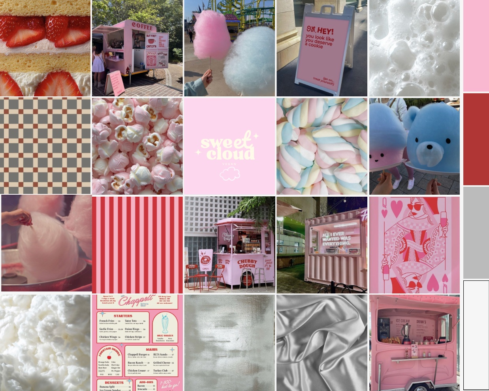
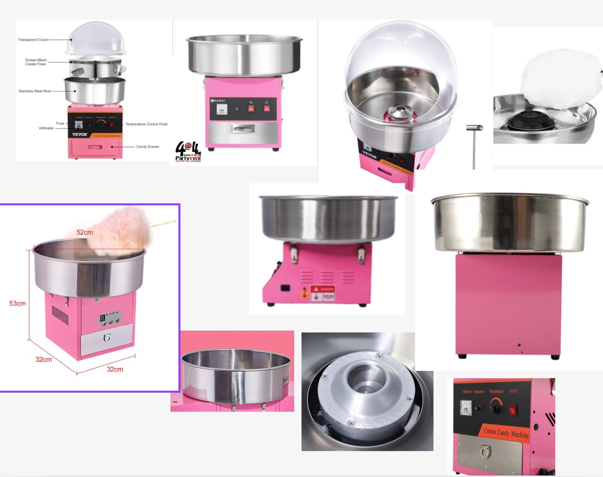
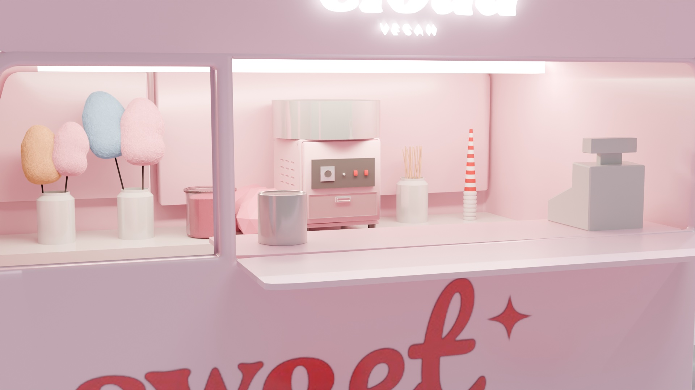
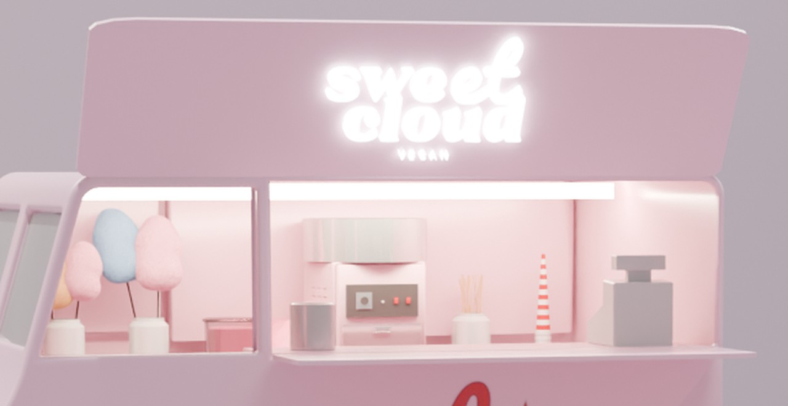
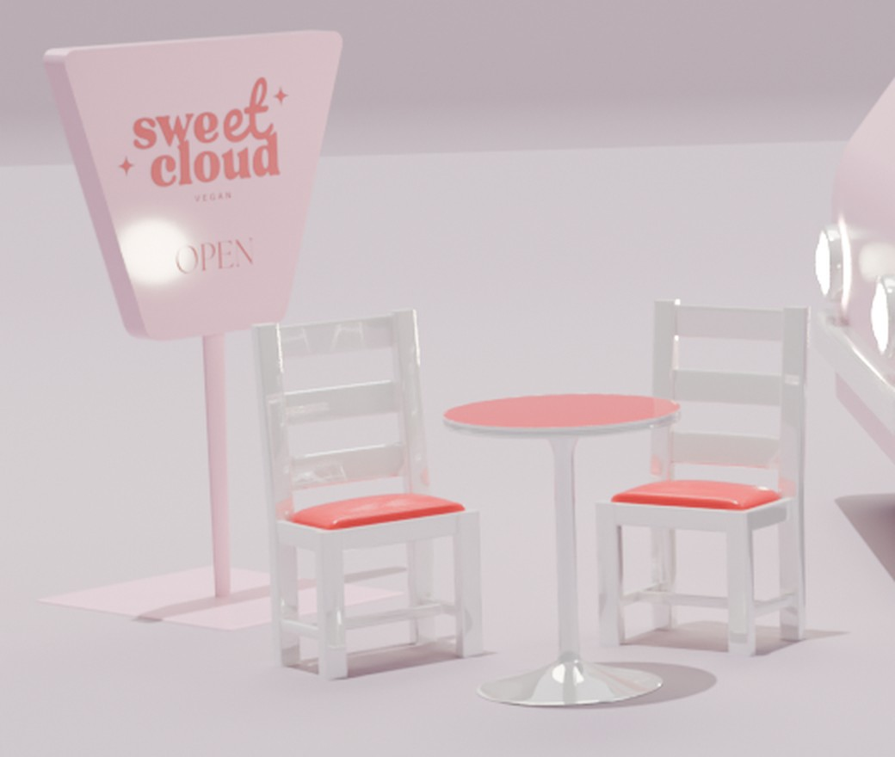

Sweet Cloud – 3D Design
Projectdetail
3D Design
Een persoonlijk 3D-designproject waarin ik een merk bedacht, Sweet Cloud, en de foodtruck met vegan suikerspin ontwierp, met signalisatie, zitplaatsen en een oplichtende etalage.

Projectintro
Overzicht
Proces
Van merk tot 3D-wereld.
Mijn eigen merk bedenken en het omzetten in een memorabele 3D-pop-upervaring die zoet, licht en uitnodigend aanvoelt.
Ik haalde inspiratie uit foodtrucks en pastelkleurige merkruimtes om me voor te stellen hoe mijn eigen merk in een ruimte zou kunnen leven.
Ik koos zachtroze tinten, rode accenten, afgeronde vormen en een oplichtend neonlogo om de sfeer speels te houden.
Ik modelleerde de truck, het bord, de tafels, krukken en stoelen, paste de branding toe en belichtte de scène voor de eindrender.
De eindrender toont een volledige, samenhangende merkscène waarin de truck en zijn omgeving één verhaal vertellen.
Ik leerde hoeveel belichting, materialen en kleine props de sfeer van een merk in drie dimensies beïnvloeden.
Beelden
Visueel proces.

Ik begon met een moodboard vol suikerspin, snoep en roze foodtrucks. Daaruit haalde ik de sfeer en het kleurenpalet van het merk: zacht roze, kersenrood, zilvergrijs en wit.

Omdat het een examenopdracht was, wilde ik de suikerspinmachine zo echt mogelijk modelleren. Ik verzamelde referentiefoto's van bestaande machines om de onderdelen, afmetingen en details te bestuderen: de inox kuip, het bedieningspaneel en de kop in het midden.

Op basis van mijn referenties modelleerde ik de suikerspinmachine zelf in Blender, met de inox kuip, het bedieningspaneel en de lade. Rond de machine plaatste ik suikerspinnen, stokjes en een kassa om de toonbank echt te laten aanvoelen.

Het verkoopraam met oplichtend logo, suikerspindisplay en kleine props geeft de truck een warm, uitnodigend blikvanger.

Het open-bord, de stoelen en de tafels trekken de merkkleuren door naar de ruimte rond de truck.
De volledige scène: truck, bord, krukken en tafels samengebracht in één zachte, samenhangende merkwereld.
Reflectie
Persoonlijke groei
De grootste uitdaging was de scène zacht en harmonieus houden terwijl het merk toch opviel. Werken in 3D leerde me een merk te zien als een ruimte in plaats van een plat beeld: hoe het belicht wordt, hoe mensen er rond zouden bewegen en hoe elk object hetzelfde verhaal ondersteunt. Dit project hielp me groeien in 3D-modelleren, belichting en ruimtelijk merkdenken.